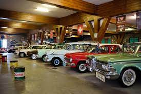

Museum Angkut
Museum Angkut merupakan museum transportasi dan tempat wisata modern yang terletak di Kota Batu, Jawa Timur, sekitar 20 km dari Kota Malang. Museum ini terletak di kawasan seluas 3,8 hektar di lereng Gunung Panderman dan memiliki lebih dari 300 koleksi jenis angkutan tradisional hingga modern. Museum ini terbagi dalam beberapa zona yang didekorasi dengan setting landscape model bangunan dari benua Asia, Eropa hingga Amerika.Di Zona Sunda Kelapa dan Batavia yang merupakan Replika Pelabuhan Sunda Kelapa, dihiasi oleh beberapa alat transportasi kuno seperti becak dan miniatur kapal. Zona Eropa juga di setting seakan-akan berada di jalanan kota-kota di Prancis dengan mobil-mobil kuno Eropa.
